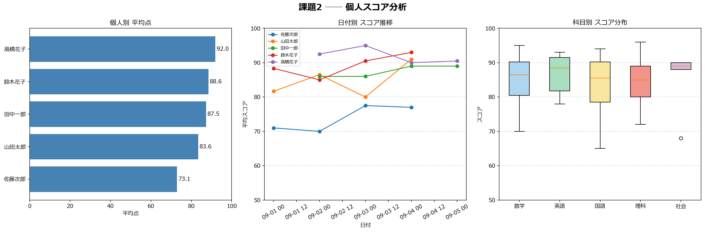
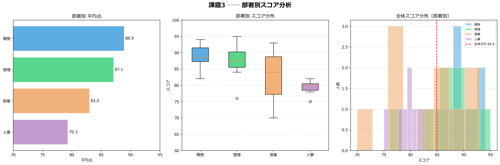

課題2 ── 個人スコア分析
最優秀者
高橋花子
平均 92.0 点
得意科目（全員平均）
英語
平均 86.7 点
参加者数
5 名
各8科目受験
最大点差
18.9 点
高橋花子 vs 佐藤次郎

| 順位 | 名前 | 平均点 | 最高点 | 最低点 | 受験科目数 |
|---|---|---|---|---|---|
| 1 | 高橋花子 | 92.0 | 96 | 88 | 8 |
| 2 | 鈴木花子 | 88.6 | 94 | 80 | 8 |
| 3 | 田中一郎 | 87.5 | 92 | 83 | 8 |
| 4 | 山田太郎 | 83.6 | 91 | 75 | 8 |
| 5 | 佐藤次郎 | 73.1 | 80 | 65 | 8 |
課題3 ── 部署別スコア分析
トップ部署
開発部
平均 88.9 点（10名）
全体最高スコア
95 点
伊藤（管理）
参加者数
35 名
4部署
全体平均
84.9 点
平均以上 57.1%（20名）

| 順位 | 部署 | 平均点 | 最高点 | 最低点 | 人数 |
|---|---|---|---|---|---|
| 1 | 開発 | 88.9 | 94 | 82 | 10 |
| 2 | 管理 | 87.1 | 95 | 76 | 8 |
| 3 | 営業 | 83.0 | 93 | 70 | 10 |
| 4 | 人事 | 79.3 | 82 | 75 | 7 |